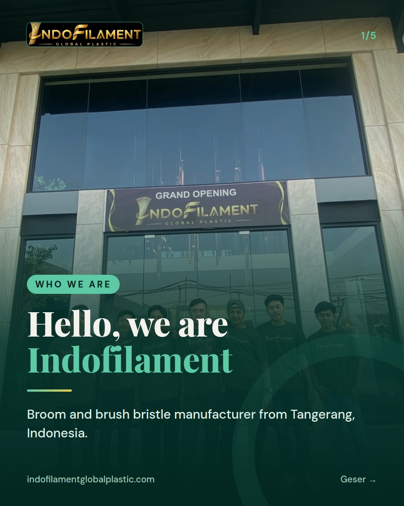
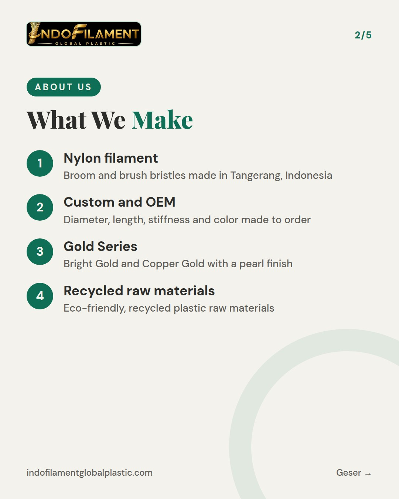
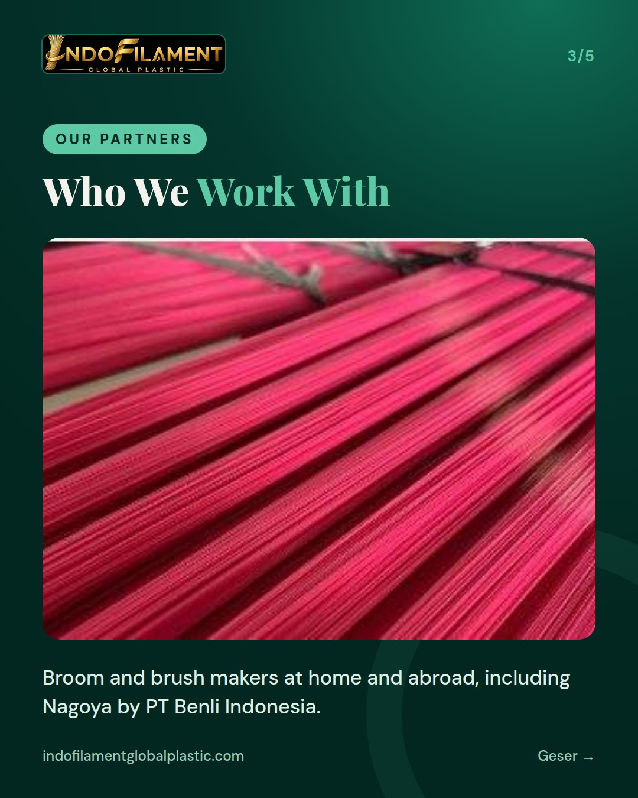
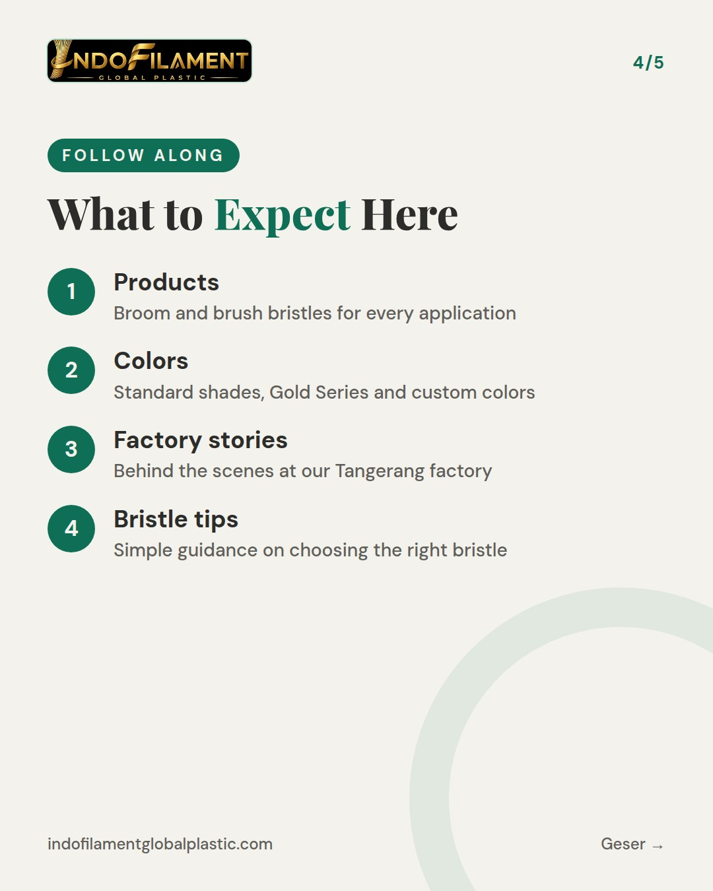
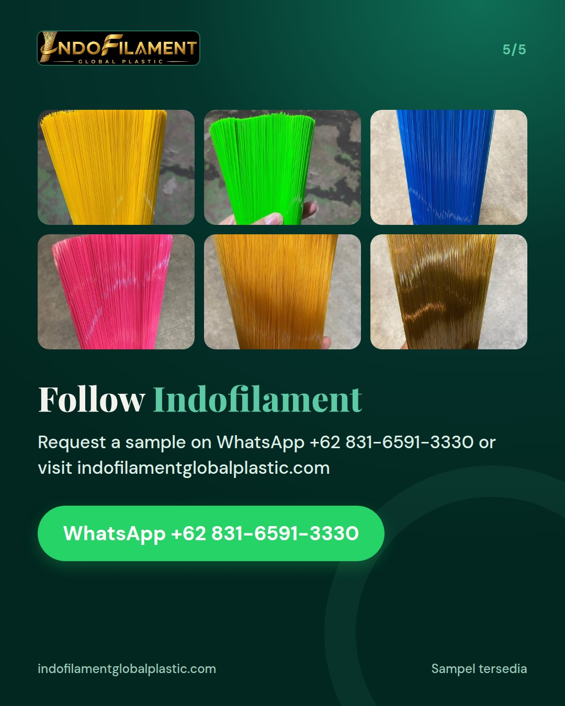

WRITE EVERYTHING IN FULL ENGLISH (all slide text and the whole caption, no Indonesian at all; English hashtags only). Audience: international and local B2B buyers. INTRO SERIES 1 of 3 - WHO WE ARE. Cover kicker: Who We Are. The cover background MUST be bg team (our team photo at the grand opening of our office). Content: a warm hello as the first post of this account; we are Indofilament (PT Indofilament Global Plastic), a broom and brush bristle (nylon filament) manufacturer from Tangerang, Indonesia, serving broom and brush factories and brands in Indonesia and export buyers; who we work with; what to expect on this account (products, colors, behind the scenes at the factory, tips for choosing bristles). Caption: part 1 of our introduction series, invite people to follow.





Hello, world! 👋 We are Indofilament (PT Indofilament Global Plastic), a broom and brush bristle manufacturer based in Tangerang, Indonesia. This is part 1 of our 3-part introduction series. We make nylon filament for brooms and brushes, from floor, toilet and kitchen brushes to paint brushes and industrial brushes, plus custom OEM and private label filament and our Gold Series. Our raw materials are recycled plastic, and we have been in full operation with modern filament machines since February 2026, serving broom and brush factories and brands in Indonesia as well as export buyers. What to expect on this account: our products, colors, behind-the-scenes looks at the factory, and practical tips for choosing the right bristles. Follow us so you don't miss parts 2 and 3! 🙌 Request a sample via WhatsApp +62 831-6591-3330 or send us a DM. Factory visits are welcome. For export buyers: we supply nylon broom and brush filament with custom diameter, length, stiffness and color. Message us to discuss your needs. #broomfilament #brushfilament #nylonfilament #bristlemanufacturer #madeinindonesia #brushmaker #broommaker #oem #privatelabel #recycledmaterials #b2b #indofilament